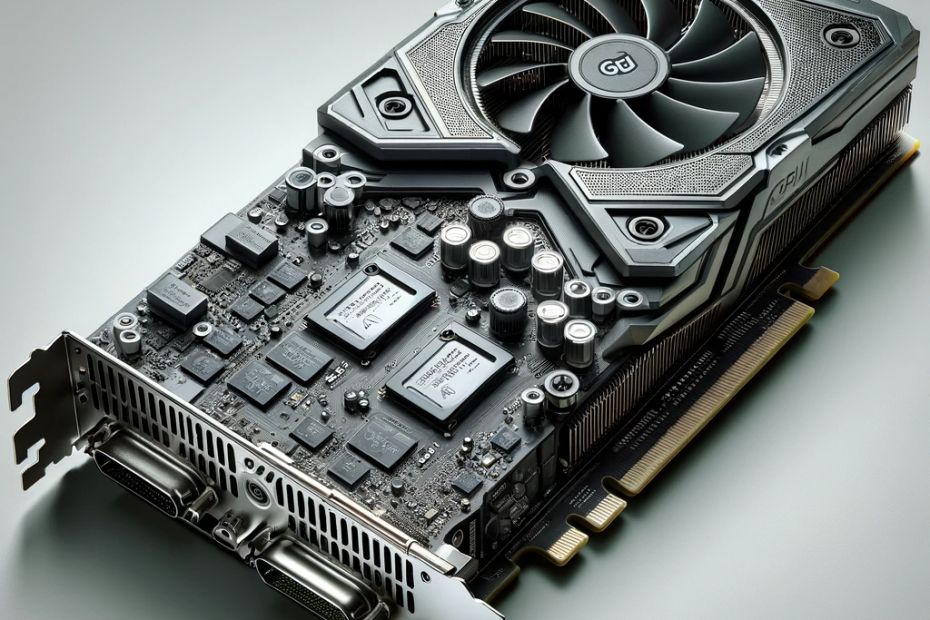

A Videókártya (GPU)

Mi az a GPU?
A GPU (Graphics Processing Unit), vagyis a grafikus feldolgozó egység, felelős a képi megjelenítésért. Míg a CPU a számítógép "agya", a GPU a "szeme" és a "vizuális központja". Ez az alkatrész végzi a bonyolult grafikai számításokat, legyen szó játékról, videovágásról vagy 3D tervezésről.
Integrált vs. Dedikált
Két fő típusa létezik:
- Integrált: A processzorba van építve. Általános irodai munkára és filmnézésre tökéletes, energiatakarékos.
- Dedikált: Különálló kártya saját memóriával (VRAM). Játékokhoz és professzionális munkához elengedhetetlen a sokkal nagyobb teljesítménye miatt.
Fő Gyártók
A piacot három nagy szereplő uralja:
- NVIDIA (GeForce): A piacvezető, híres a Ray Tracing (RTX) technológiájáról.
- AMD (Radeon): Kiváló ár-érték arányú kártyákat kínál.
- Intel (Arc): Új szereplő a dedikált kártyák piacán, ígéretes középkategóriás megoldásokkal.